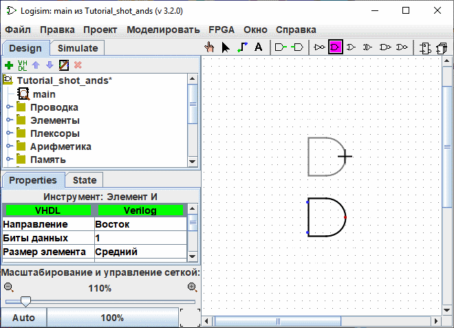
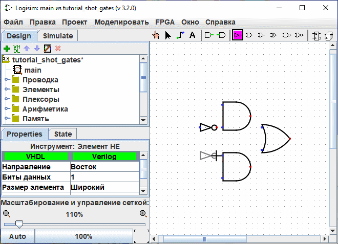
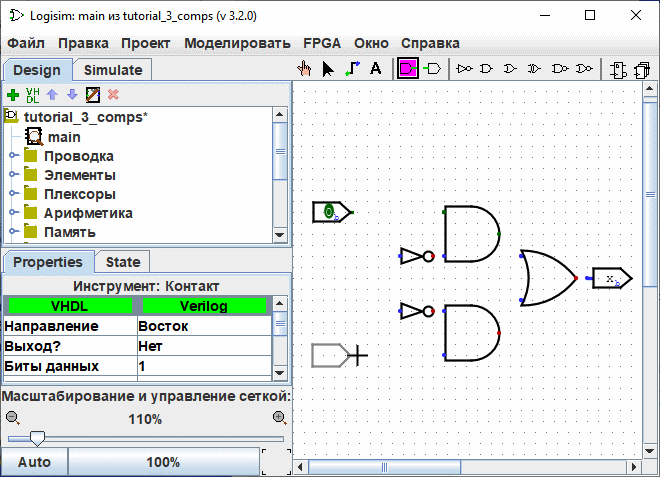

Предыдущий: Шаг 0: Начало работы
Шаг 1: Добавление логических элементов
Напомним, что нашей целью является построение в Logisim следующей схемы «Исключающее ИЛИ» (XOR):

Рекомендуется начать построение схемы с размещения базовых логических элементов, которые образуют её своеобразный каркас, а уже затем переходить к их соединению проводниками.
Первым шагом добавим два логических элемента «И». Выберите инструмент «И» (AND) на панели инструментов ( , предпоследний значок в списке). Затем щёлкните левой кнопкой мыши в области редактирования на холсте там, где вы хотите расположить первый элемент. Обязательно оставьте достаточно свободного места слева для будущих входов. После этого снова выберите инструмент «И» и расположите второй элемент строго под первым.
, предпоследний значок в списке). Затем щёлкните левой кнопкой мыши в области редактирования на холсте там, где вы хотите расположить первый элемент. Обязательно оставьте достаточно свободного места слева для будущих входов. После этого снова выберите инструмент «И» и расположите второй элемент строго под первым.

Обратите внимание на пять точек, расположенных на левой (входной) стороне логического элемента «И». Это контакты для подключения проводников. В нашей схеме XOR мы задействуем только два из них, однако для построения других схем может потребоваться большее количество входов. Число входов элемента можно в любой момент изменить с помощью атрибута Количество входов в левой панели свойств компонента.
Теперь добавьте остальные логические вентили. Сначала выберите инструмент «ИЛИ» (OR) ( ) на панели инструментов и разместите его на холсте справа от элементов «И». Затем с помощью инструмента «НЕ» (NOT) (
) на панели инструментов и разместите его на холсте справа от элементов «И». Затем с помощью инструмента «НЕ» (NOT) ( ) разместите два инвертора.
) разместите два инвертора.

На иллюстрации выше между элементами «НЕ» и «И» намеренно оставлено небольшое расстояние. При желании вы можете разместить их вплотную друг к другу — в этом случае Logisim автоматически создаст соединения между выводами, и вам не придётся прокладывать эти участки проводников вручную.
В завершение этого этапа добавим на схему два входных контакта x и y. Выберите инструмент «Вход» (Input Pin) ( ) и разместите их в левой части холста. Затем добавьте один выходной контакт рядом с выходом элемента «ИЛИ», используя инструмент «Выход» (Output Pin) (
) и разместите их в левой части холста. Затем добавьте один выходной контакт рядом с выходом элемента «ИЛИ», используя инструмент «Выход» (Output Pin) ( ). (На иллюстрации снова оставлен небольшой зазор между вентилем «ИЛИ» и выходным контактом, но их также можно разместить вплотную).
). (На иллюстрации снова оставлен небольшой зазор между вентилем «ИЛИ» и выходным контактом, но их также можно разместить вплотную).

Если вас не устраивает позиция уже размещённого компонента, вы можете выбрать его с помощью инструмента «Выбор» ( ) и перетащить в нужное место мышью. Чтобы полностью удалить элемент, выделите его и перейдите в главное меню | Правка | > | Удалить |, либо нажмите клавишу Delete или сочетание Ctrl-X (Вырезать).
) и перетащить в нужное место мышью. Чтобы полностью удалить элемент, выделите его и перейдите в главное меню | Правка | > | Удалить |, либо нажмите клавишу Delete или сочетание Ctrl-X (Вырезать).
Полезный совет: При добавлении каждого нового компонента вы заметите, что сразу после щелчка по холсту Logisim автоматически переключается обратно на базовый инструмент «Выбор» ( ). Это сделано для того, чтобы вы могли мгновенно скорректировать положение детали или начать прокладывать проводники. Если вам нужно быстро разместить несколько одинаковых элементов, используйте дублирование выделенного компонента с помощью сочетания клавиш Ctrl-D (на платформе macOS используйте Cmd-D).
). Это сделано для того, чтобы вы могли мгновенно скорректировать положение детали или начать прокладывать проводники. Если вам нужно быстро разместить несколько одинаковых элементов, используйте дублирование выделенного компонента с помощью сочетания клавиш Ctrl-D (на платформе macOS используйте Cmd-D).